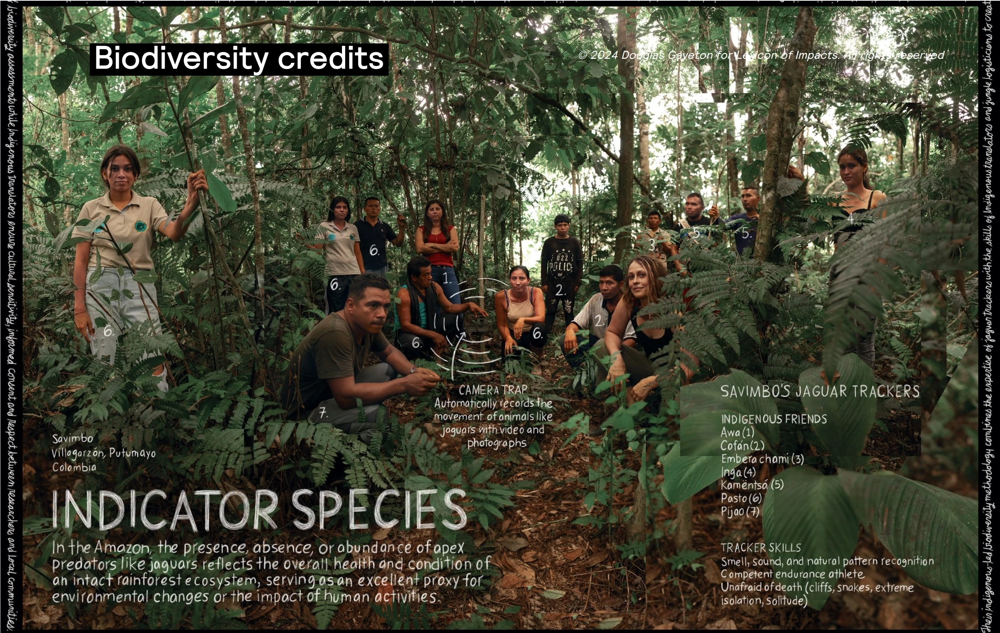

The Methodology
The Savimbo ISBM was created by Indigenous stewards in the Colombian Amazon working with scientists and community leaders to design a biodiversity monitoring and credit system that centres Indigenous knowledge, governance, and priorities. Savimbo ISBM-based projects are the first in the world to issue biodiversity credits certified under the Cercarbono Biodiversity Certification Programme (CBCP).
Learn more about Savimbo!
How We Work
Targeted, relationship-first outreach with Indigenous Communities in BC. Balanced, pressure-free workshops on biodiversity credits, nature finance, and ISBM.
BC-wide ISBM-aligned baseline framework: ecosystem categorization, drivers of biodiversity loss, and development of applicable indicator species database.
Indigenous-specific governance frameworks, theories of change, data sovereignty protocols, and community-endorsed pilot concepts — co-designed at every stage.
Co-development of tailored funding proposals for communities choosing to proceed, targeting federal, provincial, philanthropic, and nature finance sources.
Where We Are Now
We are currently in a readiness and engagement phase in British Columbia. Technical work underway includes preliminary ecosystem categorization and indicator species integrity scoring for select project locations, development of workshop and community consultation materials, and drafting of an OCAP®-aligned data sovereignty governance framework.
We are actively seeking funding from aligned philanthropic partners to support various elements of this readiness phase, covering 6–12 months of outreach, baseline development, and co-designed pilot project proposals with 2–4 Indigenous Community partners.
Connect With Us